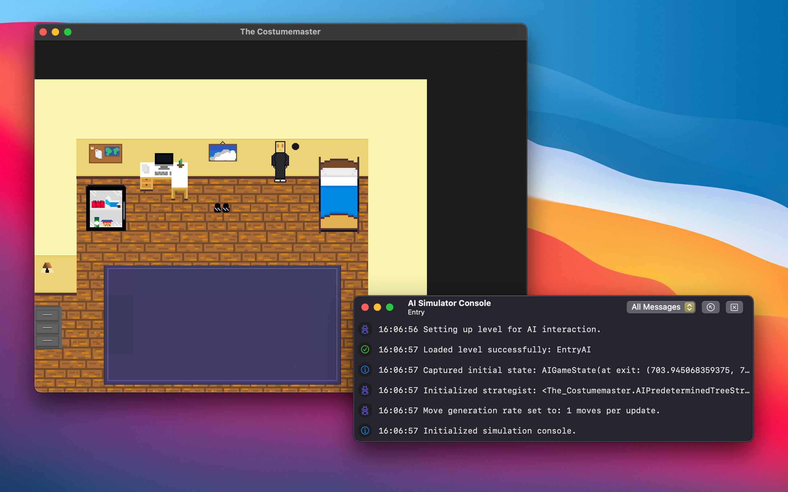
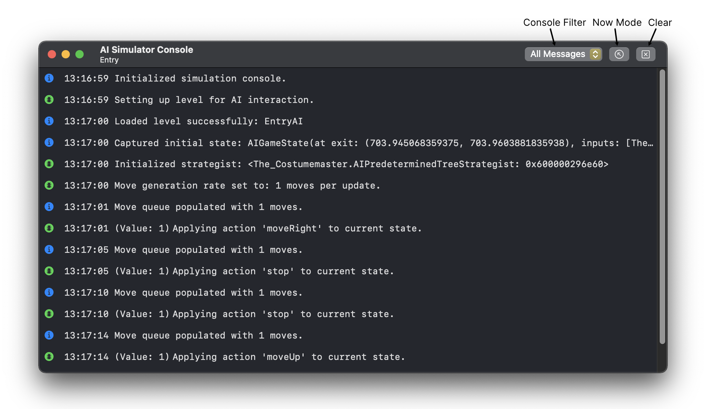

The Costumemaster comes with a tool dedicated to running simulations with artificial intelligence, the AI Simulator Tool.
To test the agents in a sample level for AI, open The Costumemaster and go to Game › Run AI Simulation... or press ⌘R on your keyboard to open the AI Simulator tool. The AI simulator tool allows you to select an agent type, move generation rate, and level for the simulator.
Apply the settings you wish to use and then click "Start Simulation" to run the simulation. The game window will play the level selected in the Simulator and a console window will appear.

There are multiple settings that can be configured in the Simulator Tool before running a simulation.
The AI Simulator Console displays messages from the simulation as the simulation progresses. These messages can be used to analyze the agent's actions and its next likely moves.
Messages sent to the console are also reflected in the command line if launched from the Terminal, with the exception of debug messages. If the console is closed, the console can be re-opened by going to Game › AI Simulator Console in the menu bar or press ⌥⌘C on your keyboard.
By default, the console will display all messages. The Console Filter changes the filter parameters to only display specific types of messages.
Now Mode allows you to view the console messages as a stack, with the most recent message at the top. Click the Now Mode button in the console toolbar to toggle Now Mode on/off.
If you wish to make recordings of playthroughs for machine learning agents to use and learn from, you can run the built-in recording tool by going to Game › Record Simulation... or by pressing ⬆⌘R on your keyboard.
Select the level you want to record by pressing "Play" on the level selection screen.
The State Recorder tool is a utility designed to help make recordings for machine learning agents. The current state assessment is displayed, and options to change the action to take are displayed at the bottom. The tool supports exporting the recording to a CSV format.
To make an action that corresponds to the current state assessment, change the value in "Perform the following action:" and click "Submit".
To export all of the current assessments and actions to a CSV file, click on the Export CSV button in the toolbar.